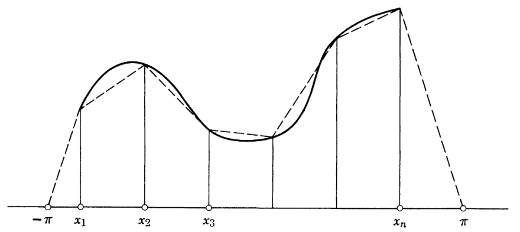

a. 关于函数表示的一般说明
从微积分诞生之初就有一个难题：若要求函数必须能以“显式”写出，函数概念应受到怎样的限制？函数往往用几何作图、机械构造或图像的几何描述给出，各个区间上的描述还可能性质迥异。
十九世纪初傅里叶级数的发现，对解答这个老问题提供了重要启发。它揭示出，相当“任意”的函数，所受限制远比“解析函数”少，也能用收敛的傅里叶级数表示。但即使傅里叶级数也不能囊括全部连续函数：前面曾提到而未证明，确有连续函数，其傅里叶系数组成的级数并不处处收敛。
更值得注意的是，只要放弃无穷级数的做法，不再要求每次只靠加上更高阶的项来改善逼近，就能对任意连续函数 f(x) 构造 n 阶三角多项式或代数多项式 Pn(x)，使它们当 n→∞ 时在闭区间上一致趋于 f(x)。
b. 魏尔斯特拉斯逼近定理
以下几个定理彼此密切相关。
(a) 若 f(x) 在闭区间 I 上连续，且 I 包含在较大的开区间 −π<x<π 内，则在 I 上可以用充分高阶的、周期为 2π 的三角多项式一致逼近 f。
(b) 任一在闭区间 I 上连续的函数 f(x)，都可在 I 上用 x 的多项式 P(x) 一致逼近。这个结论由魏尔斯特拉斯给出，还可补充以下推论（见第 539 页）。
*(c) 若 f 在 I 上有连续导数，则可选取逼近多项式，使其导多项式 Pn′(x) 同时一致逼近 f′(x)。
(a) 的证明很直接。先用一个分段线性函数逼近 f，它的图像是内接于 f 的图像的折线 Ln(x)（图 8.11）。以等距点 x1,x2,…,xn 为折线顶点的横坐标。由于连续函数在闭区间 I 上一致连续（第 100 页），只要间距 h=xν+1−xν 足够小，就能使 ∣Ln(x)−f(x)∣ 处处小于任意给定的 ϵ/2。

图 8.11 用折线一致逼近连续函数
接着如图所示，将折线两端用直线分别连到 x 轴上的 −π,π，把 Ln 延拓为整个 [−π,π] 上的分段线性函数，仍记 Ln。它在两端都为零，可以连续地作周期延拓。由 §8.6a，它有一致收敛的傅里叶展开，取充分大的 m，其多项式部分和 Sm 与 Ln 之差的绝对值就小于 ϵ/2。故 ∣Sm−f∣≤∣Sm−Ln∣+∣Ln−f∣<ϵ，(a) 得证。
原注 1（第 609 页） 若 I 就是整个 [−π,π] 而且 f(π)=f(−π)，仍有同一结论。照样选取逼近折线，只须令 Ln(−π)=Ln(π)=f(−π)=f(π)。
证明 (b) 时，按 §5.5b（第 454 页），以余项一致地很小的泰勒多项式替换有限和 Sm 中的 cosνx,sinνx。合并便得代数多项式 PN(x)，只要 N 足够大就有 ∣PN−Sm∣<ϵ/2。预先选好 m 使 ∣Sm−f∣<ϵ/2，在原来的较小区间上便一定有 ∣PN−f∣<ϵ。
*c. 费耶尔用傅里叶多项式的算术平均作三角逼近
§8.7b 的定理 (a) 还有一种简单证明，它直接、相当明确地构造出逼近多项式，所凭借的是费耶尔的下述定理。
定理 若 Sn(x) 为连续周期函数 f(x) 的第 n 个傅里叶多项式，则算术平均 Fn(x)=[S0(x)+⋯+Sn(x)]/(n+1) 在 n→∞ 时一致趋于 f(x)。取平均消减了普通傅里叶逼近所可能产生的振荡，从而保证收敛。
证明 论证类似于傅里叶展开主要定理的证明，但更简单，因为那里振荡的核 sin[(n+21)x]/[2sin(x/2)] 在这里换成了非负的费耶尔核
sn(t)=n+12(2sin(t/2)sin[(n+1)t/2])2.先注意第 586 页的 σn(α)=21+cosα+⋯+cosnα 可用余弦加法公式改写成
σn(α)=2sin(α/2)sin[(n+21)α]=2sin2(α/2)sin(α/2)sin[(n+21)α]=211−cosαcosnα−cos(n+1)α.于是
n+1σ0(α)+⋯+σn(α)=2(n+1)11−cosα1−cos(n+1)α=2(n+1)1(sin(α/2)sin[(n+1)α/2])2.由 σk 的定义（第 586 页 (14)），π−1∫−ππσk(α)dα=1，从而 π−1∫−ππsn(α)dα=1。又由第 595 页 (28a)，Sn(x)=π−1∫−ππf(x+t)σn(t)dt，所以
Fn(x)=π(n+1)1∫−ππf(x+t)[σ0(t)+⋯+σn(t)]dt=π1∫−ππf(x+t)sn(t)dt.任取 0<δ<π，差 f(x)−Fn(x) 等于 π−1∫−ππ[f(x)−f(x+t)]sn(t)dt，把它拆为 [−δ,δ]、[δ,π]、[−π,−δ] 上的三段积分。f 连续且有周期，故一致连续，可取 δ 使所有 x∈[−π,π]、∣t∣<δ 均有 ∣f(x)−f(x+t)∣<ϵ/3。且 f 有界，设 ∣f∣<M。由核的定义，δ≤∣t∣≤π 时
∣sn(t)∣≤2(n+1)sin2(δ/2)1.利用 sn≥0，得
∣f(x)−Fn(x)∣≤3πϵ∫−δδsn(t)dt+π2M(∫δπsn(t)dt+∫−π−δsn(t)dt)≤3πϵ∫−ππsn(t)dt+π2M2(n+1)sin2(δ/2)2π=3ϵ+(n+1)sin2(δ/2)2M.n 足够大时右边小于 ϵ，且与 x 无关，定理得证。
译者注 原书第 611 页在引入界 M 后，末行估计把 M 印成了 π。对任意连续周期函数，应使用 ∣f(x)−f(x+t)∣≤2M；最后令 n 足够大的论证照旧成立。
*d. 均方逼近与帕塞瓦尔等式
在闭区间 I 上，两个连续函数 g,h 的接近程度，可以用 ∣g(x)−h(x)∣ 的最大值来度量，这就是一致收敛所用的尺度。把连续函数 ϕ 的绝对值在 I 上的最大值称为它的最大范数，则 fn 一致趋于 f 意即 f−fn 的最大范数趋于零，也可用 fn−fm 的最大范数随 n,m→∞ 趋于零来刻画一致收敛性。
在傅里叶逼近以及本卷范围以外的其他重要理论中，另一种度量两函数之差的“范数”很自然。只须度量 ϕ 到恒零函数的“距离”，即所谓均方根或均方范数 μ=∥ϕ∥：
μ2=l1∫Iϕ(x)2dx,其中 l 是 I 的长。就其小并不保证函数处处都小这一点而言，它比最大范数粗略。例如 xn 在 I=[0,1] 上的均方范数等于 (2n+1)−1/2，可随 n 充分大而任意小，但函数在 x=1 始终等于 1。若 ∥fn−f∥→0，就说 fn 均方趋于 f。
称均方范数为“距离”是恰当的，因为它满足与数的情形（第 14 页）相应的三角不等式 ∥f+g∥≤∥f∥+∥g∥。在 pq≤21(p2+q2) 中取 p=f(x)/∥f∥, q=g(x)/∥g∥，在 I 上积分，便得 l−1∫If(x)g(x)dx≤∥f∥∥g∥。于是
∥f+g∥2=l1∫I[f(x)+g(x)]2dx=∥f∥2+∥g∥2+l1∫I2f(x)g(x)dx≤(∥f∥+∥g∥)2,开方即得所说的不等式。
利用这些概念，可进一步说明 §8.6b 的贝塞尔不等式。先证：在系数可自由选取的 n 阶三角多项式
Tn=21c0+ν=1∑n(cνcosνx+dνsinνx)=ν=−n∑nβνeiνx,其中 β0=c0/2, βν+β−ν=cν, i(βν−β−ν)=dν，对分段连续 f 的最佳均方逼近是傅里叶多项式
Sn=21a0+ν=1∑n(aνcosνx+bνsinνx)=ν=−n∑nανeiνx,其中实系数 aν,bν 和复系数 αν 均由第 594 页 (26) 确定。
为简明起见，用复记号证明。在 I=[−π,π] 上，利用各 eiνx 的正交关系 (25)，展开平方：
l1∫I(f(x)−ν=−n∑nβνeiνx)2dx=l1∫If(x)2−2ν=−n∑nβνf(x)eiνx+(ν=−n∑nβνeiνx)2dx=∥f∥2−2ν=−n∑nβνα−ν+ν=−n∑nβνβ−ν=∥f∥2−ν=−n∑nανα−ν+ν=−n∑n(αν−βν)(α−ν−β−ν)=∥f∥2−ν=−n∑n∣αν∣2+ν=−n∑n∣αν−βν∣2.最后一步用了实函数的共轭关系。显然各 βν=αν，即 cν=aν, dν=bν 时，最后一项为零，误差最小。
现在可以利用前面的逼近结果证明帕塞瓦尔定理。对任一处处连续、周期为 2π 的函数 f，令 n→∞，贝塞尔不等式
21a02+ν=1∑n(aν2+bν2)≤π1∫−ππf(x)2dx成为帕塞瓦尔等式
21a02+ν=1∑∞(aν2+bν2)=π1∫−ππf(x)2dx.证明 由魏尔斯特拉斯的三角多项式逼近定理，可选 Tn 使 f(x)−Tn(x) 一致趋于零，因而 (2π)−1∫−ππ[f(x)−Tn(x)]2dx→0。由刚证明的最佳逼近性质，Sn 的均方误差至多与 Tn 的一样大，所以
n→∞lim2π1∫−ππ[f(x)−Sn(x)]2dx=0.如第 613 页展开平方，即得帕塞瓦尔等式。最后指出，f 即使有有限个跳跃间断，此等式仍成立。简单的证明从略。